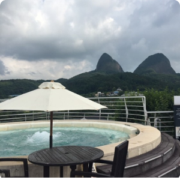

テーマ別観光名所
ビューティー/スパ
韓方
自然
ヒーリング/瞑想
地域別観光名所
ソウル特別市
京畿道
仁川広域市
江原道
慶尚北道/
大邱広域市
慶尚南道
忠清道
大田広域市
全羅道/
光州広域市
釜山広域市/
蔚山広域市
済州特別自治道
エディターおすすめの観光コース
ダブ's pick
ドヨン's pick
スヴ's pick
セン's pick
リム’s pick
関連機関
機関目録
LANGUAGE
한국어
ENGLISH
日本語

#ビューティー/スパ
鎮安紅参スパ
鎮安紅参スパは、韓国で初めて導入される紅参韓方と陰陽五行をプログラムとするスパです。 国内最大規模の健康目的型スパ施設と高品格サービスを兼ね備えた鎮安紅参スパは、 デスティネーションスパとパブリックスパが一緒に構成されています。 デスティネーションスパは様々なセラピーを受けることができるプライベート空間で構成されています。 ここでは国内の従来のパブリックスパとは異なり、体系的なプログラムを運営し、心身の真の健康と休息を追求しています。 「紅参ビル」では宿泊施設を提供し、様々な団体活動にも適した宿泊、飲食、スパ、付属施設を備えており、それに合ったイベントを提供しています。
ホームページ :
http://www.redginsengspa.co.kr/
住所 : 全北鎮安郡鎮安邑外斜陽キル16-10
電話番号 : 063-433-0396
#自然
鎮安山薬草タウン
鎮安山薬草タウンは夜間も無料で開放され、自由に散策を楽しめます。 山薬草の関連グッツを作る有料体験プログラムや自然景観探訪(山薬草ロード)、天然ハンカチ作りなどの無料体験プログラムを提供します。
ホームページ :
住所 : 全羅北道鎮安郡鎮安邑外斜陽キル16-19(丹陽里740)
電話番号 : 063-430-2430
#自然
完州アンドクヒーリング体験村
完州アンドク村は健康ヒーリング体験村というコンセプトで体験、健康教室を運営しています。 アンドク村の韓方医院と連携し、専門的な知識をもとに健康体験プログラムと健康ヒーリング教室を運営しています。 また、アンドク村の住民の積極的な参加を推奨し、住民の雇用創出に貢献しています。 アンドク村のサイトにアクセスすると、様々な体験プログラムやアンドク村を200%楽しめる情報が提供されます。
ホームページ :
http://www.poweranduk.com/
住所 : 全羅北道完州郡九二面チャンパギル72
電話番号 : 063-227-1000
#ヒーリング/瞑想
庭の下のゲストハウス&カフェ
南原にあるゲストハウスで、伝統茶が飲めるカフェやオンドル部屋、ドミトリーなどの宿泊施設を提供しています。 韓屋で宿泊しながら韓屋カフェで素敵なとっておきの一枚が撮れ、宿泊施設のリビングルームから見える野外庭園を見ながら素敵な風景を鑑賞することができます。 また、カフェで伝統茶を飲みながら癒されることができます。
ホームページ :
https://cafe.naver.com/ddlarae
住所 : 全北南原市碑石キル7
電話番号 : 063-626-8338
1
2
3